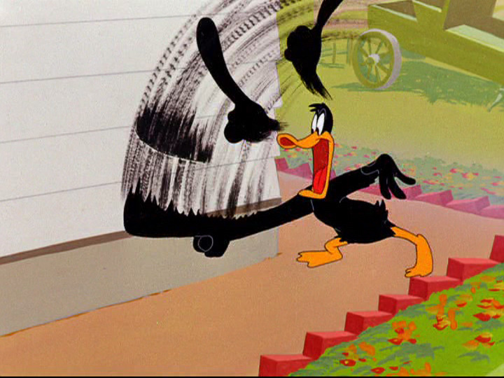

Animation is a medium that doesn’t really need an introduction. It’s been used as a way for artists to express their stories and ideas in the form of film and,at a certain point,would develop a relationship with computers,allowing for more forms of 2d and even 3d animation. From the first commercial usage of CGi(Computer-generated Imagery) in film,to the creation of Flash that inspired a generation of young animators and artists,to even nowadays with some examples that we’ll get to later, people have used computers to create new technologies in animation,some of which have been considered to be innovative.Today I want to talk about 3 modern internet technologies I discovered and researched as well as some ideas I have for the future of animation.
This application allowed for 2d puppets made from either Adobe Photoshop or Adobe Illustrator to be controlled and animated through motion capture and could even be used live.While the app received criticism for it’s overall animation quality,Character Animator would become more popular in 2016 after big TV shows like The Simpsons and The Colbert Show used it for Live TV
(Sources: Wikipedia,)
Poser is a software made for 3d animation that allowed for people to easily create realistic 3d models of humans with abilities like adding different hairstyles or clothing, morphing facial and muscular features of models,adding lip synch to dialogue,and,as the name implies,being able to make several poses for models. The software itself has been around since 1995 and since then has been used by many digital artists for animations including Rooster Teeth Studios,who used the software to animate the first 3 seasons of their popular web series,RWBY.
(Sources:Poser's Official Website,Video on Poser from 2012)
While there’s nothing new about Virtual Reality,what is new is how it is being used in Virtual Production, which uses real-time 3D to allow directors to see how a scene using VFX will look in post and see if it’s good enough. Although this technology was first used in an earlier form for Sports and Weather reports, it would later be used in movies like The Lion King with VR to visualize fully CG sets.
(Sources:Article from the NYFA)
Smear Frames are common practices in 2d animation,displaying quick movements of characters with a quick blur.My idea would be to have an AI that would generate smear frames by analyzing the difference in character(s)’ placements between two keyframes(the frames of animation meant to be seen) as well as placements of their body and facial features between frames.
This idea of mine would allow people to edit lines in their drawing by clicking and holding onto a certain part of the line and then dragging it around or just slightly dragging it in place and creating a curve in the line,saving more time than having to erase said line and then redraw it.While similar tools have worked for straight lines only and create fixed curves above or below,what would make mine different is that it would work on any type of line and allow for many dynamic curves while still staying in its original place.